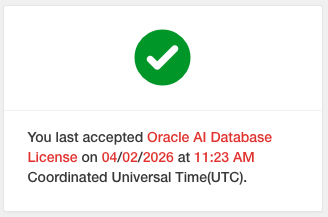

Private AI Services Container 시작하기 - Private Large Language Model Service
Getting Started with Private Large Language Model Service – Part 1를 기반으로 테스트한 내용입니다.
설치할 VM 준비
Install the Private AI Services Container 내용중 Vector Indexing Service을 참조하여 설치합니다.
-
OCI에서 VM을 생성합니다. 블로그와 달리 현재 기본 선택인 Oracle Linux 9를 사용하였습니다.
- Name: privateai-cpuvm
- Shape: VM.Standard3.Flex
- OS: Oracle Linux 9
- CPU: 8 OCPU
- Memory: 64 GB RAM
- SMT 해제
- Boot volume: 150GB로 설치
-
CPU가 AMX, AVX-512를 지원하는지 확인합니다.
[opc@privateai-cpuvm ~]$ grep -m1 '^flags' /proc/cpuinfo | grep -o 'avx512[^ ]*' avx512f ... avx512_bf16 ...
Boot Volume Resize
-
다음 명령을 실행합니다.
sudo /usr/libexec/oci-growfs -y df -h
Podman 설치
-
Oracle Linux 9 기준 다음 명령으로 설치합니다.
sudo dnf install -y container-tools -
설치된 버전을 확인합니다.
podman versionpodman images-
실행 예시
$ podman version Client: Podman Engine Version: 5.6.0 API Version: 5.6.0 Go Version: go1.25.9 (Red Hat 1.25.9-1.0.1.el9_7) Built: Fri May 29 13:42:49 2026 OS/Arch: linux/amd64 $ podman images REPOSITORY TAG IMAGE ID CREATED SIZE $
-
-
로그아웃 이웃에도 컨테이너가 계속 실행되도록 Lingering 설정
$ sudo loginctl enable-linger $(whoami) $ loginctl show-user $(whoami) | grep Linger Linger=yes -
컨테이너를 실행후 로그아웃합니다.
podman run -d ghcr.io/oracle/oraclelinux9-nginx:1.20 exit -
VM에 SSH로 재접속하여, 컨테이너가 실행중인지 확인합니다.
podman ps
Oracle Container Registry (OCR)에서 이미지 다운로드 받기
-
Oracle Private AI Services Container 이미지는 OCR(Oracle Container Registry)에서 제공합니다. Oracle Account로 로그인합니다.
-
Access Token이 필요합니다. 없는 경우 오른쪽 상단 유저 정보에서 생성합니다.
-
컨테이너 목록에서 Database > private-ai를 선택합니다.
-
이미지 다운로드를 위해서 라이센스 동의가 필요합니다. 오른쪽 가운데 Oracle AI Database License 경고문구에서 Continue를 클릭하여 동의합니다.

-
로그인후 이미지를 가져오는 것이 되는 지 확인합니다.
podman login container-registry.oracle.com docker pull container-registry.oracle.com/database/private-ai:large-cpu-avx512-infer-26.2.2.0.0 -
이미지를 확인합니다.
$ podman images REPOSITORY TAG IMAGE ID CREATED SIZE container-registry.oracle.com/database/private-ai large-cpu-avx512-infer-26.2.2.0.0 290b195ce5f9 11 days ago 23.3 GB
Private AI Services Container 설치 스크립트 가져오기
-
IMAGEID를 가져옵니다.
IMAGEID=`podman create container-registry.oracle.com/database/private-ai:large-cpu-avx512-infer-26.2.2.0.0` -
컨테이너 이미지 내부에 있는 스크립트 파일을 복사하여 꺼냅니다.
podman cp $IMAGEID:/privateai/scripts/privateai-setup-large-cpu-avx512-infer-26.2.2.0.0.zip . -
파일을 확인합니다.
$ ls -l total 16 -rw-rw-r--. 1 opc opc 12809 Aug 21 22:58 privateai-setup-large-cpu-avx512-infer-26.2.2.0.0.zip -
압축해제합니다.
unzip privateai-setup-large-cpu-avx512-infer-26.2.2.0.0.zip
Private AI Services Container - Private Large Language Model Service 설치하기 - HTTP
-
필요한 폴더를 생성합니다.
cd setup export PRIVATE_DIR=/home/opc/privateai-cpu-avx512-infer-http export CONFIG_DIR=/home/opc/config mkdir -p "$PRIVATE_DIR" "$CONFIG_DIR" -
/home/opc/config/config.json파일을 생성합니다.{ "models": [ { "name": "google/gemma-3-1b-it", "path": "google/gemma-3-1b-it", "runtime": "vllm", "capabilities": ["TEXT_GENERATION"], "startup_timeout": 1200, "runtime_arguments": [ "--dtype", "bfloat16", "--max-model-len", "4096" ] } ] } -
google/gemma-3-1b-it은 기본 탑재된 모델이 아닙니다. Hugging Face에서 다운로드 받아올 수 있도록,huggingface-token을 이후 실행시 사용할 수 있도록 저장합니다.hf_xxxxx자리에 사용한hugging-face-token을 입력하여 생성합니다.printf '%s' 'hf_xxxx' > /tmp/huggingface-token chmod 600 /tmp/huggingface-token -
컨테이너 설정 파일을 생성합니다.
./configSetup.sh -d "$PRIVATE_DIR" -c /home/opc/config/config.json-
실행 예시
$ ./configSetup.sh -d "$PRIVATE_DIR" -c /home/opc/config/config.json SUCC: Container UID 2001 maps to Host UID 102000 WARN: No security directory passed SUCC: Copied PrivateAI config file SUCC: Generated PrivateAI logs directory
-
-
컨테이너를 실행합니다. 앞서 생성한
hugging-face-token경로를 지정합니다../containerSetup.sh -d $PRIVATE_DIR -n privateai-cpu-avx512-infer-http -hf /tmp/huggingface-token --http-
실행 예시
$ ./containerSetup.sh -d $PRIVATE_DIR -n privateai-cpu-avx512-infer-http -hf /tmp/huggingface-token --http Using image version large-cpu-avx512-infer-26.2.2.0.0 HTTPS connection enabled: false SUCC: Container started
-
-
컨테이너 실행을 확인합니다.
[opc@privateai-cpuvm setup]$ podman ps CONTAINER ID IMAGE COMMAND CREATED STATUS PORTS NAMES 814ed5edd562 container-registry.oracle.com/database/private-ai:large-cpu-avx512-infer-26.2.2.0.0 23 seconds ago Up 24 seconds (starting) 0.0.0.0:8080->8080/tcp privateai-cpu-avx512-infer-http [opc@privateai-cpuvm setup]$ podman logs -f privateai-cpu-avx512-infer-http INFO: Config file set to config.json WARNING: Disabling authentication because HTTPS has been disabled INFO: Hugging Face token loaded from secret /run/secrets/huggingface-token ____ _ _ _ ___ | _ \ _ __(_)_ ____ _| |_ ___ / \ |_ _| | |_) | '__| \ \ / / _` | __/ _ \ / _ \ | | | __/| | | |\ V / (_| | || __/ / ___ \ | | |_| |_| |_| \_/ \__,_|\__\___| /_/ \_\___| Private-AI (version small-cpu-infer-26.2.2.0.0, build 2.0.50) 12:44:22.976 [main] INFO i.m.l.PropertiesLoggingLevelsConfigurer - Setting log level 'ERROR' for logger: 'io.micrometer.core.instrument.binder.cache.CaffeineCacheMetrics' 12:44:22.978 [main] INFO i.m.l.PropertiesLoggingLevelsConfigurer - Setting log level 'ERROR' for logger: 'io.micrometer.core.instrument.binder.cache.caffeine-cache-metrics' 12:44:23.147 [main] INFO io.micronaut.runtime.Micronaut - Startup completed in 58095ms. Server Running: http://0.0.0.0:8080 -
컨테이서 생성시
/run/secrets/huggingface-token경로로 복사되었으므로, 이제 호스트에서 삭제해도 됩니다.rm /tmp/huggingface-token -
헬스체크합니다.
export HOST=$(hostname -f); echo $HOST curl -i http://$HOST:8080/health-
실행 예시
$ curl -i http://$HOST:8080/health HTTP/1.1 200 OK date: Sun, 11 Oct 2026 12:33:43 GMT x-server-id: d1527dd7-965b-432a-8543-8ec54d52a6e7 x-ratelimit-global-limit-requests: 30000 x-ratelimit-global-remaining-requests: 29999 x-ratelimit-global-reset-requests: 1 x-ratelimit-limit-requests: 30000 x-ratelimit-remaining-requests: 29999 x-ratelimit-reset-requests: 1 content-length: 0
-
-
모델 리스트를 조회합니다.
curl -s http://localhost:8080/v1/models | jq .-
결과 예시
{ "data": [ { "id": "google/gemma-3-1b-it", "modelDeployedTime": "2026-10-11T12:49:03.860049167Z", "modelSize": "1.86G", "modelCapabilities": [ "TEXT_GENERATION" ] } ] }
-
-
호출이 되는 지 확인합니다.
curl -s http://localhost:8080/v1/chat/completions \ -X POST \ --header 'Content-Type: application/json' \ --data '{ "model": "google/gemma-3-1b-it", "messages": [ { "role": "user", "content": "What is the capital of South Korea?" } ] }' | jq .-
결과 예시
{ "id": "chatcmpl-b2ce40fdc7111c70", "object": "chat.completion", "created": 1791722161, "model": "google/gemma-3-1b-it", "choices": [ { "index": 0, "message": { "tool_calls": [], "content": "The capital of South Korea is **Seoul**.\n", "role": "assistant" }, ... } ], ... }
-
LLM 서빙 성능 평가
여기서는 vllm 프로젝트에서 제공하는 LLM 성능 평가 도구인 GuildeLLM을 사용하여, 성능을 평가합니다.
-
GuideLLM을 설치합니다.
pip install guidellm -
Hugging Face에서 Read 권한 토큰을 만든 뒤 로그인 합니다.
hf auth login -
벤치마크를 위해 다음 명령을 실행합니다.
max_length=100조건에 맞춰 token 수를 가정streams로 동시 요청수, 배치 사이즈 지정
guidellm run \ --backend kind=openai_http,target=http://localhost:8080 \ --profile kind=concurrent,streams=1,warmup=5,cooldown=5 \ --constraint kind=max_duration,seconds=120 \ --data kind=synthetic_text,prompt_tokens=16,output_tokens=84 -
전체 결과 중 일부 항목입니다.
- 요청에 대한 결과까지 시간(Request Latency), 첫 글자가 보이기까지 시간(TTFT), 이후 생성되는 토큰 간 간격(ITL), 출력 처리량(Output Tokens Per Sec)
- 전체 응답(Request Latency)까지 5.1초 걸리며, UI가 스트리밍 모드라면, 첫 응답토큰(TTFT)을 받는 데 0.4초가 걸렸습니다.
- VM의 고정비용이 나가지만, 일반적인 LLM 서비스에서는 비용 계산시 사용되는 항목으로 보면 Output Tokens Per Sec로 비용을 산정해 볼 수 있습니다.
ℹ Request Latency Statistics (Completed Requests) |============|=========|========|=======|=======|=======|=======|======|======|======|======| | Benchmark | Request Latency || TTFT || TTFOT || ITL || TPOT || | Strategy | Sec || ms || ms || ms || ms || | | Mdn | p95 | Mdn | p95 | Mdn | p95 | Mdn | p95 | Mdn | p95 | |------------|---------|--------|-------|-------|-------|-------|------|------|------|------| | concurrent | 5.1 | 5.3 | 416.6 | 475.6 | 416.6 | 475.6 | 57.1 | 58.6 | 61.6 | 63.2 | |============|=========|========|=======|=======|=======|=======|======|======|======|======| ℹ Server Throughput Statistics (All Requests) |============|=======|======|=========|==============|===============|==============| | Benchmark | Requests ||| Input Tokens | Output Tokens | Total Tokens | | Strategy | Concurrency || Per Sec | Per Sec | Per Sec | Per Sec | | | Mdn | Mean | Mean |||| |------------|-------|------|---------|--------------|---------------|--------------| | concurrent | 1.0 | 1.0 | 0.2 | 5.2 | 16.1 | 21.2 | |============|=======|======|=========|==============|===============|==============|
LLM 서빙 성능 평가 결과
테스트 환경에 따라 결과치는 달라질수 있습니다. 단순 참조용입니다.
google/gemma-3-1b-it
- 실요청 Input 토큰: 24
- 실응답 Output 토큰: 84
| shape | streams | dtype | p95 Request Latency (초) (답변 전체 시간) |
p95 TTFT (ms) (첫 글자가 보이기까지) |
p95 ITL (ms) (생성 중 토큰 간 간격) |
Output Tokens / 초 (출력 처리량) |
|---|---|---|---|---|---|---|
| VM.Standard3.Flex | 1 | bfloat16(AVX) | 5.1 | 391.5 | 57.0 | 16.6 |
| 8 | 18.2 | 1506.5 | 210.9 | 37.7 | ||
| 32 | 62.9 | 5604.9 | 738.8 | 44.2 | ||
| VM.Standard4.Ax.Flex | 1 | bfloat16(AVX) | 3.6 | 119.6 | 42.6 | 24.2 |
| 8 | 5.2 | 293.0 | 60.6 | 130.9 | ||
| 32 | 11.5 | 689.2 | 135.5 | 237.5 | ||
| VM.Standard.E6.Flex | 1 | bfloat16(AVX) | 4.7 | 117.6 | 55.8 | 17.8 |
| 8 | 6.7 | 322.8 | 77.2 | 102.4 | ||
| 32 | 12.7 | 717.9 | 148.2 | 214.4 | ||
| VM.Standard.E6.Ax.Flex | 1 | bfloat16(AVX) | 3.9 | 93.6 | 46.3 | 22.0 |
| 8 | 5.7 | 226.8 | 66.3 | 121.7 | ||
| 32 | 11.3 | 688.0 | 133.1 | 238.7 |
| shape | streams | Output Tokens / 초 (출력 처리량) |
OCPU 시간당 단가 ($) |
메모리 GB 시간당 단가 ($) |
8 OCPU / 64 GB 시간당 단가 ($) |
$ per 1M token 1백만 토큰 당 비용($) |
|---|---|---|---|---|---|---|
| VM.Standard3.Flex | 1 | 16.6 | 0.0400 | 0.0015 | 0.4160 | 6.9612 |
| 8 | 37.7 | 0.0400 | 0.0015 | 0.4160 | 3.0651 | |
| 32 | 44.2 | 0.0400 | 0.0015 | 0.4160 | 2.6144 | |
| VM.Standard4.Ax.Flex | 1 | 24.2 | 0.0119 | 0.0114 | 0.8248 | 9.4674 |
| 8 | 130.9 | 0.0119 | 0.0114 | 0.8248 | 1.7503 | |
| 32 | 237.5 | 0.0119 | 0.0114 | 0.8248 | 0.9647 | |
| VM.Standard.E6.Flex | 1 | 17.8 | 0.0300 | 0.0020 | 0.3680 | 5.7428 |
| 8 | 102.4 | 0.0300 | 0.0020 | 0.3680 | 0.9983 | |
| 32 | 214.4 | 0.0300 | 0.0020 | 0.3680 | 0.4768 | |
| VM.Standard.E6.Ax.Flex | 1 | 22.0 | 0.0138 | 0.0108 | 0.8016 | 1.8296 |
| 8 | 121.7 | 0.0138 | 0.0108 | 0.8016 | 1.8525 | |
| 32 | 238.7 | 0.0138 | 0.0108 | 0.8016 | 0.9328 |
- 비용 계산 - $ / 1M output tokens = (8 OCPU / 64 GB 시간당 단가) / (Output Tokens/초 * 3600초) * 1,000,000
- 예, VM.Standard.E6.Flex, stream=32 비용 계산하면 (0.3680) / (258.0 * 3600) * 1,000,000=0.3962
Private AI Services Container - Private Large Language Model Service 설치하기 - HTTPS
HTTPS 기반으로 설치하기
앞서와 동일한데, Self-Signed 인증서를 사용하여 HTTPS로 설치합니다. ADB에서 연동할 때 필요할 수 있어, 기록을 위해 남겨둡니다.
-
필요한 폴더를 생성합니다.
cd setup export PRIVATE_DIR=/home/opc/privateai-cpu-avx512-infer-https export SECRETS_DIR=/home/opc/secrets export CONFIG_DIR=/home/opc/config mkdir -p "$PRIVATE_DIR" "$SECRETS_DIR" "$CONFIG_DIR" -
Secret 관련 파일들을 생성합니다.
./secretsSetup.sh -s "$SECRETS_DIR"-
실행 예시 - keystore password 없으면, 이후 컨테이너 실행이 오류가 발생하니, 반드시 입력합니다.
$ ./secretsSetup.sh -s "$SECRETS_DIR" Enter keystore password: Confirm keystore password: SUCC: Generated security directory at /home/opc/secrets $ ls -la $SECRETS_DIR total 24 drwxr-xr-x. 3 opc opc 98 Oct 8 04:02 . drwx------. 11 opc opc 4096 Oct 8 04:01 .. -rw-r--r--. 1 opc opc 64 Oct 8 04:02 api-key -rw-r--r--. 1 opc opc 1375 Oct 8 04:02 cert.pem -rw-------. 1 opc opc 1704 Oct 8 04:02 key.pem -rw-r--r--. 1 opc opc 451 Oct 8 04:02 key.pub -rw-------. 1 opc opc 2798 Oct 8 04:02 keystore drwxr-xr-x. 2 opc opc 6 Oct 8 04:02 secrets
-
-
/home/opc/config/config.json파일을 생성합니다.{ "models": [ { "name": "google/gemma-3-1b-it", "path": "google/gemma-3-1b-it", "runtime": "vllm", "capabilities": ["TEXT_GENERATION"], "startup_timeout": 1200, "runtime_arguments": [ "--dtype", "bfloat16", "--max-model-len", "4096" ] } ] } -
google/gemma-3-1b-it은 기본 탑재된 모델이 아닙니다. Hugging Face에서 다운로드 받아올 수 있도록,huggingface-token을 이후 실행시 사용할 수 있도록 저장합니다.hf_xxxxx자리에 사용한hugging-face-token을 입력하여 생성합니다.printf '%s' 'hf_xxxx' > /tmp/huggingface-token chmod 600 /tmp/huggingface-token -
컨테이너 설정 파일을 생성합니다.
./configSetup.sh -d "$PRIVATE_DIR" -s "$SECRETS_DIR" -c /home/opc/config/config.json-
실행 예시
$ ./configSetup.sh -d "$PRIVATE_DIR" -s "$SECRETS_DIR" -c /home/opc/config/config.json SUCC: Container UID 2001 maps to Host UID 102000 SUCC: Copied PrivateAI security directory SUCC: Copied PrivateAI config file SUCC: Generated PrivateAI logs directory
-
-
컨테이너를 실행합니다. 앞서 생성한
hugging-face-token경로를 지정합니다../containerSetup.sh -d $PRIVATE_DIR -n privateai-cpu-avx512-infer-https -hf /tmp/huggingface-token-
실행 예시
$ ./containerSetup.sh -d $PRIVATE_DIR -n privateai-cpu-avx512-infer-https Using image version large-cpu-avx512-infer-26.2.2.0.0 HTTPS connection enabled: true SUCC: Container started
-
-
컨테이너 실행을 확인합니다.
[opc@privateai-cpuvm setup]$ podman ps CONTAINER ID IMAGE COMMAND CREATED STATUS PORTS NAMES 094ebf1eafe6 container-registry.oracle.com/database/private-ai:large-cpu-avx512-infer-26.2.2.0.0 10 seconds ago Up 10 seconds (starting) 0.0.0.0:8443->8443/tcp privateai-cpu-avx512-infer-https [opc@privateai-cpuvm setup]$ podman logs -f 094ebf1eafe6 INFO: Config file set to config.json INFO: Keystore path set to file:/run/secrets/keystore INFO: API Key path set to /run/secrets/api-key INFO: Hugging Face token loaded from secret /run/secrets/huggingface-token ____ _ _ _ ___ | _ \ _ __(_)_ ____ _| |_ ___ / \ |_ _| | |_) | '__| \ \ / / _` | __/ _ \ / _ \ | | | __/| | | |\ V / (_| | || __/ / ___ \ | | |_| |_| |_| \_/ \__,_|\__\___| /_/ \_\___| Private-AI (version small-cpu-infer-26.2.2.0.0, build 2.0.50) 04:29:05.971 [main] INFO i.m.l.PropertiesLoggingLevelsConfigurer - Setting log level 'ERROR' for logger: 'io.micrometer.core.instrument.binder.cache.CaffeineCacheMetrics' 04:29:05.972 [main] INFO i.m.l.PropertiesLoggingLevelsConfigurer - Setting log level 'ERROR' for logger: 'io.micrometer.core.instrument.binder.cache.caffeine-cache-metrics' 04:29:06.234 [main] INFO io.micronaut.runtime.Micronaut - Startup completed in 157928ms. Server Running: https://0.0.0.0:8443 -
컨테이서 생성시
/run/secrets/huggingface-token경로로 복사되었으므로, 이제 호스트에서 삭제해도 됩니다.rm /tmp/huggingface-token -
헬스체크합니다.
export HOST=$(hostname -f); echo $HOST curl -i --cacert $SECRETS_DIR/cert.pem https://$HOST:8443/health-
실행 예시
$ curl -i --cacert $SECRETS_DIR/cert.pem https://$HOST:8443/health HTTP/1.1 200 OK date: Thu, 8 Oct 2026 04:45:26 GMT x-server-id: 277057c5-2e1a-44f6-a9f9-1a54df287133 x-ratelimit-global-limit-requests: 30000 x-ratelimit-global-remaining-requests: 29999 x-ratelimit-global-reset-requests: 1 x-ratelimit-limit-requests: 30000 x-ratelimit-remaining-requests: 29999 x-ratelimit-reset-requests: 1 content-length: 0
-
-
모델 리스트를 조회합니다.
$SECRETS_DIR하위에 생성된 API_KEY를 확인합니다. LLM 호출시 필요합니다.export API_KEY=`cat $SECRETS_DIR/api-key` echo $API_KEY -
모델 리스트를 조회합니다.
curl -s https://localhost:8443/v1/models \ --header "Authorization: Bearer $API_KEY" \ --cacert "$SECRETS_DIR/cert.pem" | jq .-
결과 예시
{ "data": [ { "id": "google/gemma-3-1b-it", "modelDeployedTime": "2026-10-08T05:18:00.691592641Z", "modelSize": "1.86G", "modelCapabilities": [ "TEXT_GENERATION" ] } ] }
-
-
호출이 되는 지 확인합니다.
curl -s https://localhost:8443/v1/chat/completions \ -X POST \ --header 'Content-Type: application/json' \ --header "Authorization: Bearer $API_KEY" \ --cacert "$SECRETS_DIR/cert.pem" \ --data '{ "model": "google/gemma-3-1b-it", "messages": [ { "role": "user", "content": "What is the capital of South Korea?" } ] }' | jq .-
결과 예시
{ "id": "chatcmpl-a4bb1b0b0a747af1", "object": "chat.completion", "created": 1791436948, "model": "google/gemma-3-1b-it", "choices": [ { "index": 0, "message": { "tool_calls": [], "content": "The capital of South Korea is **Seoul**.\n", "role": "assistant" }, ... } ], ... }
-
LLM 서빙 성능 평가
여기서는 vllm 프로젝트에서 제공하는 LLM 성능 평가 도구인 GuildeLLM을 사용하여, 성능을 평가합니다.
HTTP 기반 호출할때와 차이는, 기 생성한 Self-Signed 인증서와 API Key를 사용하는 방법의 확인후 기록한 내용입니다.
-
GuideLLM을 설치합니다.
pip install guidellm -
Hugging Face에서 Read 권한 토큰을 만든 뒤 로그인 합니다.
hf auth login -
벤치마크를 위해 다음 명령을 실행합니다.
max_length=100조건에 맞춰 token 수를 가정streams로 동시 요청수, 배치 사이즈 지정
export SECRETS_DIR=/home/opc/secrets export API_KEY=`cat $SECRETS_DIR/api-key`; echo $API_KEY export HOST=$(hostname -f); echo $HOST # 시스템 CA + Private AI 인증서를 합치기 cat /etc/pki/tls/certs/ca-bundle.crt "$SECRETS_DIR/cert.pem" \ > "$HOME/privateai-ca-bundle.pem" export SSL_CERT_FILE="$HOME/privateai-ca-bundle.pem" guidellm run \ --backend "kind=openai_http,target=https://$HOST:8443,api_key=$API_KEY,verify=true" \ --profile kind=concurrent,streams=1,warmup=5,cooldown=5 \ --constraint kind=max_duration,seconds=120 \ --data kind=synthetic_text,prompt_tokens=16,output_tokens=84
이 글은 개인으로서, 개인의 시간을 할애하여 작성된 글입니다. 글의 내용에 오류가 있을 수 있으며, 글 속의 의견은 개인적인 의견입니다.